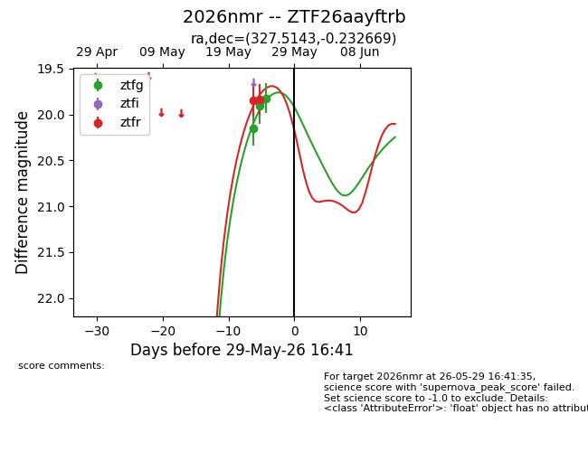
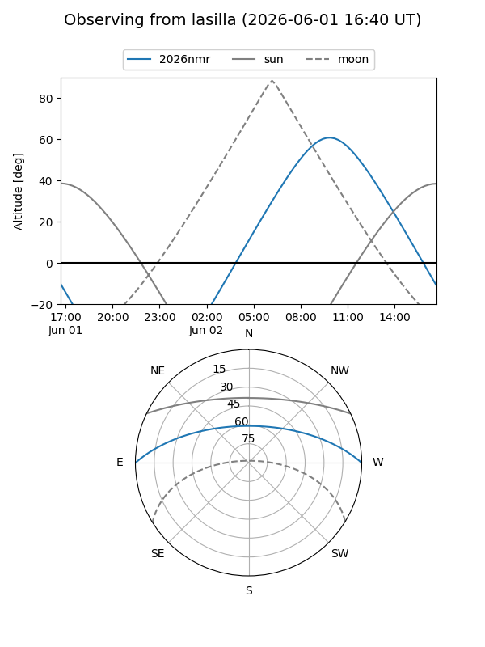
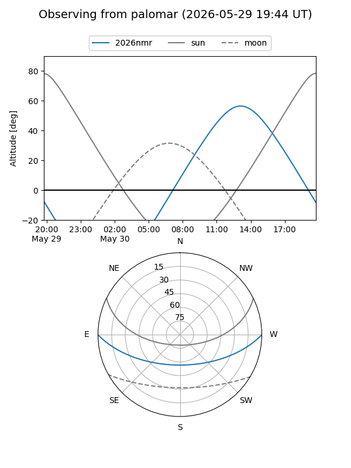
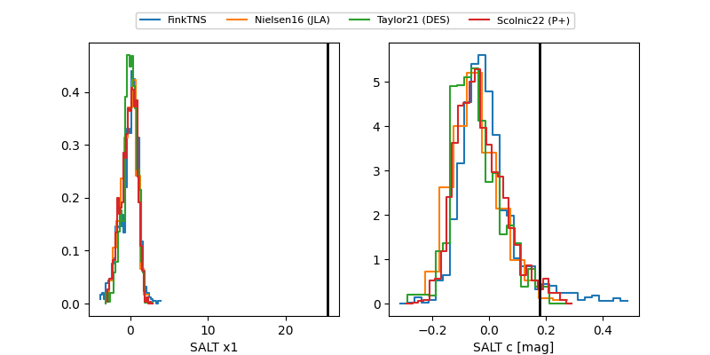

2026nmr
Target 2026nmr at 2026-05-29 16:42
Aliases and brokers:
lsst-FINK: link
lsst-Lasair: link
lsst-ALeRCE: link
ztf-FINK: link
ztf-Lasair: link
ztf-ALeRCE: link
TNS: link
YSE: link
alt names
ZTF26aayftrb (ztf,fink_ztf)
2026nmr (tns,yse)
Coordinates:
equatorial (ra, dec) = 327.5143,-0.23267
equatorial (HMS+DMS) = 21:50:03.42,-00:13:57.61
galactic (l, b) = (56.9421,-38.85561)
Flags:
TNS confirmed: nan
Photometry:
last ztfg=19.82, ztfr=19.84
3 ztfg, 2 ztfr detections
Lightcurve

Visibility


Additional plots
